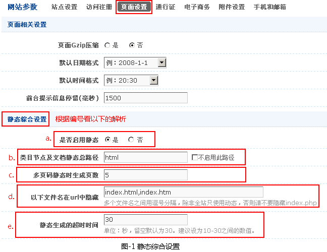
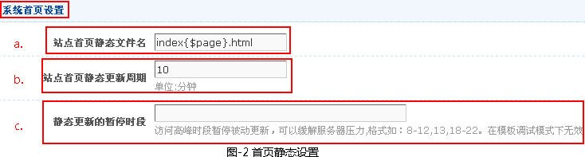
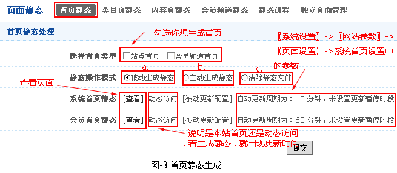

首页静态
一、前言
08cms首页静态生成设置及生成方法介绍
二、静态综合设置
-
在设置首页、栏目页、内容页的静态之前，首先要启用静态，才有效。就需要设置静态综合（〖系统设置〗->〖网站参数〗->〖页面设置〗->静态综合设置）。如图-1所示

a.是否启用静态-是全站是否启用静态的总开关，只是这个地方设置为是，前台才能生成静态。
b.类目节点及文档静态总路径-选中[不启用此目录]时，生成静态的页面的URL地址不包含html。
c.多页码静态时生成页数-有多页码的页面在生成静态页面的页数。
d.以下文件名在url中隐藏-就是输入框中文件名（index.html,index.htm）在网址中被隐藏。（多个文件名之间用逗号分隔，除非全站只使用动态，否则请不要隐藏index.php）
e.静态生成的超时时间-设置超时时间，就是在生成静态页面的过程，如果设置秒数为30秒，在30秒还没生成就视为生成失败，不然就会一直等下去。（留空默认为30。建议设为10-30之间的数值。）
三、首页静态设置
-
设置首页静态(〖系统设置〗->〖网站参数〗->〖页面设置〗->系统首页设置),如图-2所示。

a.站点首页静态文件名-一般系统默认。
b.站点首页静态更新周期-让站点首静态在设置好的时间内容自动更新首页（单位:分钟）。
c.静态更新的暂停时段-访问高峰时段暂停被动更新，可以缓解服务器压力,格式如：8-12,13,18-22。在模板调试模式下无效。
四、生成首页静态
- 在设置好首页静态参数时，就可以进行首页静态的生成（〖其他管理〗->〖页面静态〗->〖首页静态〗），如图-3所示。

a.被动生成静态：在网站正常运营期建议使用此设置，系统会自动生成静态页，避免大批量生成静态页面时对服务器资源的消耗。
b.主动生成静态：当网站建设完成，开始正常运营前建议使用一次。一般情况下不建议使用此操作。
c.清除原静态文件：当首页改回动态访问时，需要删除原先生成的静态首页。
生成首页操作步骤：1.勾选用户想生成首页。
2.选中静态操作模式。（以上有说明）
3.点击提交按钮，方可完成。